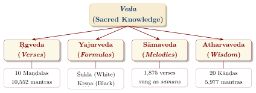
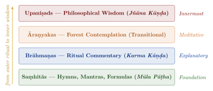
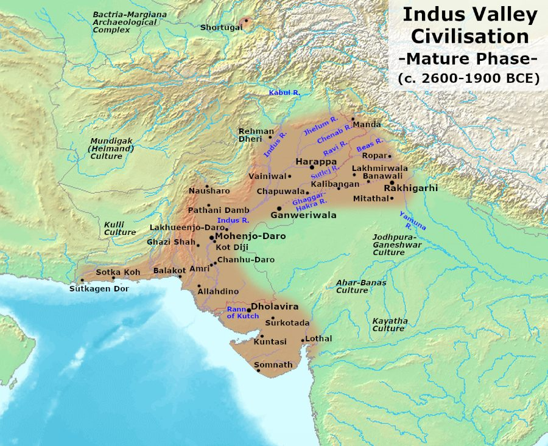
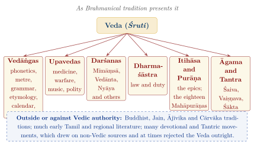

Chapter 1: Introduction to the Vedic Knowledge System¶
Invocatory Verse
vedāham etaṃ puruṣaṃ mahāntam
ādityavarṇaṃ tamasaḥ parastāt
I know this great Puruṣa (Supreme Being), luminous as the Sun,
beyond all darkness.
— Śvetāśvatara Upaniṣad 3.8
1.1 What is Veda?¶
The word Veda is derived from the Sanskrit root vid, meaning “to know.” Within the tradition, and especially in the Mīmāṃsā school, Veda denotes not merely a collection of ancient texts but knowledge held to be eternal (nitya), intrinsically valid (svataḥ pramāṇa), and authorless (apauruṣeya). The Vedas are regarded as Śruti—that which was “heard” by the ancient seers (ṛṣis)—and were transmitted orally, with remarkable fidelity, for some three thousand years. Historians, for their part, treat the same texts as compositions of many generations of poets and ritualists, composed in north-western and northern India between roughly 1500 and 500 BCE (Witzel 2003; Jamison and Brereton 2014). This volume sets out both perspectives and marks clearly which is which.
The Vedic corpus is more varied than the English word “scripture” suggests. It includes:
-
Hymns and prayers — poetry of praise, petition and speculation addressed to the gods;
-
Ritual texts — formulas, chants and prose explanations for the solemn sacrifices (yajña);
-
Speculative dialogues — the riddles of the Ṛgveda and the philosophical discussions of the Āraṇyakas and Upaniṣads;
-
Charms and spells — especially in the Atharvaveda, for healing, protection, love and prosperity;
-
Ancillary sciences — phonetics, grammar, metre, etymology, ritual geometry and calendrics, developed to preserve and perform the texts correctly.
The Threefold Meaning of Veda
In traditional thought the term Veda is understood at three levels:
-
Cosmic level: The eternal knowledge inherent in the fabric of the universe, identified in Mīmāṃsā and Vedānta with the eternal Word or with Brahman itself.
-
Revelatory level: The specific mantras and hymns “seen” (dṛṣṭa) by the seers (ṛṣis) during deep contemplation.
-
Textual level: The four Saṃhitās and their associated literature, as preserved and transmitted across generations.
1.2 The Fourfold Division of the Vedas¶
The Vedic corpus, as it has come down to us, is traditionally divided into four Saṃhitās (collections), each associated with a specific aspect of the Vedic yajña (sacred ritual):
-
Ṛgveda (Ṛk = praise, verse) — The Veda of hymns; contains verses of praise addressed to the gods (devas).
-
Yajurveda (Yajus = sacrificial formula) — The Veda of ritual formulas; provides the prose mantras used in ceremonies.
-
Sāmaveda (Sāman = melody, chant) — The Veda of melodies; sets verses, almost all of them found in the Ṛgveda, to melodies for chanting.
-
Atharvaveda (Atharvan = the name of an ancient sage) — The Veda of practical and esoteric knowledge; addresses healing, daily life, and philosophical speculation.
Each of these four Vedas (Figure 1.1) was transmitted in several śākhās (recensions or “branches”), of which only a fraction survive. A traditional count, already found in Patañjali’s Mahābhāṣya (c. 150 BCE), gives the Ṛgveda 21 śākhās, the Yajurveda 101, the Sāmaveda 1,000 and the Atharvaveda 9. These figures are conventional rather than historical; scholars can identify a few dozen schools with confidence, of which about a dozen survive (Witzel 1997).
The tradition explains the division into four by the work of the sage Kṛṣṇa Dvaipāyana, called Veda Vyāsa, “the arranger of the Veda”. According to the Purāṇas (e.g. Viṣṇu Purāṇa 3.4), Vyāsa, foreseeing the decline of human memory in the approaching Kali Yuga, divided a single primordial Veda into four collections and entrusted them to four pupils—the Ṛgveda to Paila, the Yajurveda to Vaiśampāyana, the Sāmaveda to Jaimini and the Atharvaveda to Sumantu—from whom the lineages of the schools descend. Historians read the story as a later explanation of a real process: the collection and arrangement of hymns and formulas by priestly schools, probably in the Kuru realm of the early first millennium BCE (Witzel 1997). The four collections answer to the four kinds of priest in the śrauta ritual (Section 8.3); the schools themselves, their numbers and their survival are the subject of Chapter 12 (Table 12.1).

1.3 The Layers of Vedic Literature¶
Each of the four Vedas is not a monolithic text but a layered corpus. Tradition arranges it in four genres (Figure 1.2), and Vedānta reads them as a progression from external ritual to inner realisation. Historically the genres overlap: Brāhmaṇa-style prose already occurs in the Black Yajurveda Saṃhitās, and the oldest Upaniṣads are themselves parts of Brāhmaṇas or Āraṇyakas.
Saṃhitā — The core collection of mantras, hymns, and formulas.
Brāhmaṇa — Prose commentaries explaining the rituals and the significance of the mantras.
Āraṇyaka — “Forest texts” intended for contemplation in solitude, bridging ritual and philosophy.
Upaniṣad — The philosophical culmination, exploring the nature of Ātman (Self) and Brahman (Absolute Reality).

1.3.1 The Vedic Corpus at a Glance¶
Table 1.1 lists the principal surviving texts of each Veda by genre. The Upaniṣads named are those embedded in, or traditionally attached to, the schools concerned; they are treated in Volume 2 of this series.
| Veda | Saṃhitā | Brāhmaṇa | Āraṇyaka | Early Upaniṣads | Śrauta and Gṛhya Sūtras |
|---|---|---|---|---|---|
| Ṛgveda | Śākala | Aitareya; Kauṣītaki | Aitareya; Kauṣītaki | Aitareya; Kauṣītaki | Āśvalāyana; Śāṅkhāyana |
| Black Yajurveda | Taittirīya; Maitrāyaṇī; Kāṭhaka; Kapiṣṭhala | Taittirīya | Taittirīya | Taittirīya; Kaṭha; Śvetāśvatara; Maitrī | Baudhāyana; Āpastamba; Hiraṇyakeśin; Mānava |
| White Yajurveda | Vājasaneyi (Mādhyandina, Kāṇva) | Śatapatha | (ŚB 14) | Bṛhadāraṇyaka; Īśā | Kātyāyana; Pāraskara |
| Sāmaveda | Kauthuma; Rāṇāyanīya; Jaiminīya | Pañcaviṃśa; Ṣaḍviṃśa; Jaiminīya | (Jaiminīya Upaniṣad Brāhmaṇa) | Chāndogya; Kena | Lāṭyāyana; Drāhyāyaṇa; Gobhila |
| Atharvaveda | Śaunaka; Paippalāda | Gopatha | — | Muṇḍaka; Praśna; Māṇḍūkya | Vaitāna; Kauśika |
1.3.2 The Auxiliary Sciences¶
Around the four Vedas the later tradition grouped a set of auxiliary sciences. The six Vedāṅgas, “limbs of the Veda”—phonetics, metre, grammar, etymology, astronomy and calendar, and ritual procedure—grew up to preserve, understand and perform the texts correctly; they are the subject of Chapter 7. Later texts also attach to each Veda a “subsidiary Veda” (upaveda): medicine, warfare, music, and polity or architecture. That scheme is a post-Vedic classification which lent Vedic prestige to sciences whose content developed long after the Vedic period; it is discussed in Chapter 10.
1.4 The Concept of Apauruṣeya: Authorless Revelation¶
A distinctive doctrine of the later tradition is apauruṣeyatva—the claim that the Vedas are not the composition of any human or even divine author, but eternal. On this view the ṛṣis are not “authors” but “seers” who “saw” the hymns. The idea is old: Yāska’s Nirukta (c. 5th century BCE) explains the word ṛṣi from “seeing” (ṛṣir darśanāt, Nirukta 2.11).
The Seers in Yāska’s Nirukta
sākṣātkṛtadharmāṇa ṛṣayo babhūvuḥ
The seers were those who had direct insight into dharma.
— Nirukta 1.20
The Vedic poets themselves, however, often speak of “making” or “fashioning” their hymns (the verb takṣ, “to fashion as a carpenter does”), and the hymns name their poets and patrons. The full doctrine of authorlessness was worked out by the Mīmāṃsā school. Jaimini’s Mīmāṃsāsūtra (usually dated to the last centuries BCE) holds that the relation between a word and its meaning is “inborn” (autpattika, Mīmāṃsāsūtra 1.1.5), not conventional, and later Mīmāṃsakas such as Śabara and Kumārila argued that a text without an author is free of the defects that make human testimony fallible, and is therefore intrinsically valid (svataḥ pramāṇa). This is a reasoned philosophical position, not simply an appeal to faith; it was also contested in India itself by Buddhist, Jain and Cārvāka thinkers and, from a different angle, by Nyāya, which held the Vedas to be authoritative because they were composed by a reliable author, God.
1.5 The Seers and Their Hymns¶
Each hymn of the Ṛgveda is assigned, in the later index called the Sarvānukramaṇī (attributed to Kātyāyana), to a seer (ṛṣi), a deity (devatā) and a metre (chandas). Some of these ascriptions reflect genuine family traditions, since the poets often name themselves or their clans in the hymns; others, especially for late hymns, are inferred from the content and should be treated as traditional rather than historical.
1.5.1 The Sapta Ṛṣis (Seven Great Seers)¶
Later tradition honours seven primordial seers (saptarṣi), whose names vary from text to text; the list of the Bṛhadāraṇyaka Upaniṣad (2.2.4) is:
-
Atri — Seer of the fifth Maṇḍala of the Ṛgveda
-
Bharadvāja — Seer of the sixth Maṇḍala
-
Gautama — Ancestor of the Gautama clan, to which Vāmadeva, the seer of the fourth Maṇḍala, belongs
-
Jamadagni — Father of Paraśurāma
-
Kaśyapa — The primeval progenitor sage
-
Vasiṣṭha — Seer of the seventh Maṇḍala; priest (purohita) of King Sudās (RV 7.18)
-
Viśvāmitra — Seer of the third Maṇḍala; the seer of the Gāyatrī Mantra
1.5.2 Women Seers¶
The Anukramaṇīs ascribe a number of Ṛgvedic hymns to women seers (ṛṣikās), among them Ghoṣā, Lopāmudrā and Vāk Āmbhṛṇī (Table 2.10), and the Upaniṣads show women in philosophical debate. These figures matter, but they should not be over-read. Some ascriptions are probably derived from the speaker of a hymn rather than from a historical poet—in RV 10.125 the speaker is the goddess Speech herself (Section 2.5.4)—and women appear in the ritual chiefly as the sacrificer’s wife (patnī), whose presence was required. In later centuries women’s access to Vedic study narrowed sharply: the Dharmaśāstras treat marriage as the equivalent of initiation for women and prescribe that their life-cycle rites be performed without Vedic mantras (Manusmṛti 2.66–67). The evidence, which is mixed and changes over time, is set out in Section 14.7.
1.6 Śruti and Smṛti¶
The later tradition built a careful framework for the authority of the Vedas. Its central idea is the distinction between Śruti and Smṛti. The related theory of the means of valid knowledge (pramāṇa), and the long debate between the philosophical schools about the authority of verbal testimony and of the Veda in particular, belong to the history of philosophy and are treated in Volume 3, Darśana Darpaṇa.
The distinction is that between Śruti (“that which is heard”) and Smṛti (“that which is remembered”). Śruti comprises the four Vedas and their associated Brāhmaṇas, Āraṇyakas, and Upaniṣads. Smṛti includes the Dharmaśāstras, Itihāsas, Purāṇas, and other secondary texts. The authority of Smṛti is always subordinate to Śruti; where there is a conflict, Śruti prevails.
The Primacy of Śruti
vedaḥ smṛtiḥ sadācāraḥ svasya ca priyam ātmanaḥ
etac caturvidhaṃ prāhuḥ sākṣād dharmasya lakṣaṇam
The Veda, tradition, the conduct of good people, and what is pleasing to oneself—
these, they say, are the four visible marks of Dharma.
— Manusmṛti 2.12
1.6.1 The Concept of Vidyā and Avidyā¶
The Vedic tradition draws a fundamental distinction between vidyā (knowledge, specifically liberating knowledge) and avidyā (ignorance or incomplete knowledge). The Muṇḍaka Upaniṣad further distinguishes between parā vidyā (higher knowledge leading to the realisation of Brahman) and aparā vidyā (lower knowledge, which it identifies as the four Vedas and the six Vedāṅgas, Muṇḍaka Upaniṣad 1.1.4–5). Even the Veda itself is thus ranked below the knowledge of the imperishable; later thinkers extended the category of lower knowledge to all learning that does not directly lead to liberation.
1.7 The Vedic Chronological Framework¶
When were the Vedic texts composed? The question matters for everything that follows, and it has been argued over for two centuries. It is best approached by separating three kinds of answer: the traditional chronology, which belongs to the religious tradition; the mainstream academic chronology, which rests on several independent lines of evidence; and alternative proposals for much earlier dates, which have a following in India but are not accepted by most specialists, Indian or foreign.
1.7.1 The Traditional Chronology¶
In traditional reckoning the Vedas are beginningless (anādi) and authorless (apauruṣeya); on this view the question of “dating” them does not arise, only the question of when they were arranged in their present form. According to the Purāṇas, the present age, the Kali Yuga, began in 3102 BCE, and Vyāsa arranged the Veda into four Saṃhitās at the close of the preceding Dvāpara Yuga. The 3102 BCE epoch itself is first attested in the Āryabhaṭīya of Āryabhaṭa (499 CE), and it appears to be a back-calculated astronomical epoch rather than a historical record.
1.7.2 The Mainstream Academic Chronology¶
Most historians and Indologists date the Vedic texts relative to one another by their language, and then anchor that relative sequence to a few external fixed points (Witzel 2003; Jamison and Brereton 2014). The relative strata are set out in Table 1.2.
| Stratum | Texts | Characteristic Features | Approximate Date |
|---|---|---|---|
| Early Ṛgvedic | Family Books (Maṇḍalas 2–7) | Most archaic language; frequent injunctive; rich verbal system | c. 1500–1200 BCE |
| Late Ṛgvedic | Maṇḍalas 1, 8 (in part), 10 | Newer forms and vocabulary; speculative hymns (e.g. RV 10.90, 10.129) | c. 1200–1000 BCE |
| Mantra language | Atharvaveda, Sāmaveda and Yajurveda mantras | First mention of iron (śyāma ayas); new vocabulary | c. 1200–900 BCE |
| Saṃhitā prose | Black Yajurveda prose | Earliest expository prose | c. 900–800 BCE |
| Brāhmaṇa prose | Brāhmaṇas, Āraṇyakas, oldest Upaniṣads | Developed prose; ritual exegesis | c. 850–500 BCE |
| Sūtra language | Śrauta, Gṛhya, Dharma and Śulba Sūtras | Compressed technical style | c. 600–200 BCE |
1.7.3 External Anchors¶
Three kinds of external evidence tie this relative sequence to absolute dates.
The Mitanni treaty (c. 1380 BCE).
The most important fixed point comes not from India but from northern Syria. A treaty between the Hittite king Šuppiluliuma I and Šattiwaza, king of Mitanni, preserved on clay tablets from the Hittite capital Ḥattuša and usually dated c. 1380 BCE (some chronologies place it a few decades later), calls on the Mitanni gods as witnesses. Among them appear Mi-it-ra, U-ru-wa-na, In-da-ra and the Na-ša-at-ti-ya—that is, Mitra, Varuṇa, Indra and the Nāsatyas (Aśvins), named in the same grouping as in the Ṛgveda. A horse-training manual from the same archive, attributed to a Mitanni trainer named Kikkuli, uses Indo-Aryan technical terms and numerals (aika-, tera-, pañza-, satta-, cf. Sanskrit eka, tri, pañca, sapta) for the number of laps. The Mitanni rulers also bore Indo-Aryan names. This shows that speakers of an early form of Indo-Aryan, worshipping the Ṛgvedic gods, had reached the Near East by the fourteenth century BCE, and that their language was, if anything, slightly older than Ṛgvedic Sanskrit. It is consistent with a Ṛgveda composed in the second half of the second millennium BCE; it does not support dates in the fourth or fifth millennium.
The Avestan comparison.
The language of the oldest part of the Zoroastrian scripture, the Old Avestan Gāthās, is so close to Ṛgvedic Sanskrit that whole lines can be converted from one to the other by regular sound changes. The two traditions share a common religious vocabulary: Avestan aša and Vedic ṛta (“truth, order”), haoma and soma, yasna and yajña, Mi\(\theta\)ra and Mitra, ahura and asura, daēva and deva (with reversed valuation). Indo-Iranian must therefore have been a single language not long before the Ṛgveda; the Gāthās are usually dated to the late second or early first millennium BCE, though their date is itself debated (Table 1.3).
| Vedic | Avestan | Remarks |
|---|---|---|
| deva | daēva | “God” in the Veda; “demon” in Zoroastrianism |
| asura | ahura | “Lord”, a title of powerful gods; in Avestan the title of the supreme god, Ahura Mazdā |
| ṛta | aša | Truth, cosmic order |
| soma | haoma | The sacred plant and drink |
| yajña | yasna | Worship, sacrifice |
| hotṛ | zaotar | Priest who pours or recites |
| atharvan | ā\(\theta\)ravan | Fire-priest |
| Mitra | Mi\(\theta\)ra | God of contract |
| Yama, son of Vivasvant | Yima, son of Vīvahvant | First mortal, king of a paradise |
| Vṛtrahan | Verethragna | “Smiter of Vṛtra”, epithet of Indra; an Iranian god of victory |
| sapta sindhavaḥ | hapta hindu | “Seven rivers” |
| gāthā | gā\(\theta\)ā | Song, verse |
The sound correspondences are regular: Vedic s corresponds to Avestan h (soma–haoma, sindhu–hindu), and Vedic h or j to Avestan z (hotṛ–zaotar). The reversal of values between deva and asura shows that the two traditions, once one, developed in rivalry.
The kinship extends beyond vocabulary to myths, ritual and social ideas. Both traditions know a dragon-slaying hero: the Ṛgvedic Trita Āptya, who kills the three-headed son of Tvaṣṭṛ (RV 10.8), corresponds to the Avestan Thraētaona, son of Āthwya, who kills the three-headed dragon Aži Dahāka, and the Vedic epithet of Indra, vṛtrahan, survives in Iran as the name of a god of victory. Both have a pressed sacred drink with its own hymns—the Avestan Hōm Yašt (Yasna 9–11) is the counterpart of the ninth book of the Ṛgveda—and both a ritual fire tended by a priest who pours and recites (Section 8.8). The Avesta divides society into priests (ā\(\theta\)ravan), chariot-warriors (ra\(\theta\)aēštar) and herdsmen-farmers, a threefold scheme that matches the Ṛgveda’s brahman, kṣatra and viś before the fourth class appears in the Puruṣa Sūkta. At the same time the two traditions diverged sharply: the Zoroastrian reform condemned the daēvas and made one ahura supreme, while the Vedic tradition, which kept the devas, came to treat the asuras as their enemies. These shared inheritances and divergences are best explained by a common Indo-Iranian past not long before the composition of the oldest texts of each tradition.
Material culture and geography.
The Ṛgveda knows bronze or copper (ayas) but not iron; iron (“dark metal”, śyāma ayas or kṛṣṇāyas) first appears in the Atharvaveda. Iron working becomes widespread in northern India from c. 1200–1000 BCE, although some earlier dates have been claimed. The horse and the spoked-wheel chariot, central to the Ṛgveda, are well attested in South Asia only from the second millennium BCE. The Ṛgveda’s geography centres on the Greater Panjab (Sapta Sindhavaḥ) and the Sarasvatī; later Vedic texts shift eastward to the Kuru–Pañcāla country of the Ganga–Yamunā Doab and then to Videha. The Ṛgveda shows no knowledge of cities of the Harappan kind, of writing, or of seals.
Taken together, these lines of evidence led scholars such as Witzel, Jamison and Brereton, and many Indian historians, to place the bulk of the Ṛgveda c. 1500–1200 BCE (some allow c. 1700–1100 BCE) and the later Vedic texts in the first half of the first millennium BCE (Witzel 2003; Jamison and Brereton 2014; Thapar 2002). These dates are inferences, not certainties, and specialists continue to refine them.
1.7.4 Alternative Proposals for Earlier Dates¶
Several writers have proposed much earlier dates. Their arguments deserve to be stated fairly, together with the reasons most specialists do not accept them.
-
Astronomical arguments. B. G. Tilak (The Orion, 1893) and, independently, Hermann Jacobi argued that Vedic references to the year beginning with the asterism Mṛgaśiras (Orion) reflect the position of the vernal equinox around 4500 BCE (Tilak 1893). In The Arctic Home in the Vedas (1903) Tilak went further, reading descriptions of long dawns as memories of an Arctic homeland. Critics point out that the passages are brief and ambiguous, that they may preserve old calendar conventions rather than contemporary observation, and that astronomical dates depend on which star and which season a phrase is assumed to mean.
-
Numerical “codes”. Subhash Kak has argued that the numbers of hymns and verses in the Ṛgveda and the brick counts of fire altars encode astronomical constants. Because the numbers can be grouped and combined in many ways, such correspondences are easy to find and impossible to test; they are not accepted as evidence by specialists and are not used in this volume.
-
The Sarasvatī argument. David Frawley, Kak and others argue that because the Ṛgveda praises the Sarasvatī as a mighty river, and the Ghaggar–Hakra (with which it is usually identified) had dwindled by c. 1900 BCE, the hymns must be older than that date. This is discussed below.
1.7.5 The Sarasvatī River¶
The Sarasvatī is celebrated in the Ṛgveda as “best of mothers, best of rivers, best of goddesses” (ambitame nadītame devitame sarasvati, RV 2.41.16), and a hymn of Vasiṣṭha describes her flowing “from the mountains to the sea”:
Praise of Sarasvatī — Ṛgveda 7.95.2
ekācetat sarasvatī nadīnāṃ śucir yatī giribhya ā samudrāt
Sarasvatī, alone among the rivers, has taken notice,
pure, flowing from the mountains to the sea.
— Ṛgveda 7.95.2
Most scholars identify the Ṛgvedic Sarasvatī, at least in the later hymns, with the Ghaggar–Hakra system of Haryana, Rajasthan and Cholistan, whose dry bed is lined with Harappan sites; a minority identify the older Sarasvatī with the Helmand of Afghanistan (Avestan Haraxvaitī).
The geological picture is more complicated than the popular argument assumes. A major study by Giosan and colleagues found that the Ghaggar–Hakra was not fed by a large glacier-fed Himalayan river during Harappan times; it was a monsoon-fed river whose flow declined, together with the Harappan cities along it, as the monsoon weakened around 2000 BCE (Giosan et al. 2012). Later work dated the Sutlej’s shift away from this channel to about 8,000 years ago, long before the Harappan period (Singh et al. 2017). On this evidence there was no mighty snow-fed Sarasvatī for the Ṛgvedic poets to describe after the early Holocene, and the river’s drying cannot by itself fix a date for the hymns. The praise of the river may be religious and poetic rather than hydrological; the word samudra can mean a large body of water or a terminal lake rather than the ocean; and the late hymn RV 10.75 already lists the Sarasvatī as one river among many. The question remains open, but it is no longer reasonable to present the Sarasvatī as a proof that the Ṛgveda predates 1900 BCE (Figure 1.3).

.png){kind=link}
1.8 Modern Academic Debates¶
Several questions about the Vedas remain genuinely open. The most politically charged is the origin of the Indo-Aryan languages and of the people who composed the hymns.
1.8.1 Where Did the Indo-Aryan Languages Come From?¶
Sanskrit belongs to the Indo-European language family, together with Iranian, Greek, Latin, Germanic, Slavic and other languages. Since these languages share a common ancestor, its speakers must have lived somewhere, and its daughter languages must have spread from there. The debate is about where that homeland was and how Indo-Aryan reached South Asia. The main positions are:
-
Migration from the Eurasian steppe. Most historical linguists, archaeologists and geneticists hold that Indo-Iranian developed in the steppe and Central Asia, and that Indo-Aryan speakers entered the north-west of the subcontinent in the second millennium BCE, through gradual movements of people over generations rather than a single “invasion”. Vedic culture on this view formed in South Asia, through interaction between incoming groups and the existing population; the Ṛgveda already contains words borrowed from local languages, and Vedic Sanskrit has the retroflex consonants typical of the South Asian linguistic area.
-
Indigenous origin (“Out of India”). A minority of writers, mostly in India—among them K. D. Sethna, Shrikant Talageri, N. S. Rajaram and Koenraad Elst—argue that the Indo-Aryans were indigenous and that Indo-European languages spread outward from India, or that the Vedic people were the bearers of the Harappan Civilisation. This view has few supporters among specialists in historical linguistics.
It is important to see that this is not a division between “Indian” and “Western” scholarship. Leading Indian historians such as R. S. Sharma, Romila Thapar and Irfan Habib accept a second-millennium arrival of Indo-Aryan speech, while some Western writers argue for indigenous origins (Thapar 2002). The real division is between methods and kinds of evidence.
The evidence of ancient DNA.
Since 2018, genome-wide data from ancient skeletons have transformed the debate. The largest study, by Narasimhan and colleagues, analysed several hundred ancient individuals from Central and South Asia (Narasimhan et al. 2019). Its main findings are: (1) the population of the Harappan world was a mixture of ancestry related to ancient Iranian farmers and to indigenous South Asian hunter-gatherers, and lacked steppe ancestry; (2) ancestry derived from Middle-to-Late Bronze Age steppe populations entered South Asia in the first half of the second millennium BCE, c. 2000–1500 BCE; (3) most present-day South Asians descend from a mixture of these sources in varying proportions, and steppe-related ancestry is proportionally higher in some groups of traditionally priestly status and in speakers of Indo-European languages. A genome from the Harappan site of Rakhigarhi, published the same year, likewise showed no steppe ancestry (Shinde et al. 2019).
These results fit the migration model well. They are consistent with the arrival of Indo-Aryan languages with people moving from the north-west in the second millennium BCE, and hard to reconcile with an Indian origin of the Indo-European family. They do not show any “invasion” or conquest; they show admixture over many centuries. Nor do they make the Harappans “non-Indian” or Vedic culture “foreign”: both are chapters in the history of the subcontinent, and the population that composed and preserved the Vedas was a mixed one. The Harappan script remains undeciphered, and the language or languages of the Harappans are unknown.
1.8.2 Textual Criticism and Oral Tradition¶
A second debate concerns how far Western textual-critical methods, developed for manuscript traditions, apply to an orally preserved corpus. The Vedic oral tradition has preserved the Ṛgveda with extraordinary fidelity (Chapter 11), so that variant readings of the kind found in manuscript traditions are almost absent. Scholars nevertheless detect earlier stages beneath the transmitted text: some features of the received Saṃhitā text, such as certain sandhi forms, are later than the hymns’ composition and must be undone to restore the original metre.
1.9 Vedic Manuscript Traditions¶
The Vedas were composed and transmitted orally, and for a long time writing them down was positively discouraged; a passage of the Mahābhārata (13.24.70, critical edition) lists “those who write the Vedas” among those who will go to hell. Manuscripts were nevertheless made, as aids to teachers and ritualists. Because palm leaf, birch bark and paper decay quickly in the Indian climate, surviving Vedic manuscripts are late: very few are older than the eleventh century CE, and most were copied in the last four or five centuries.
1.9.1 Writing Materials and Scripts¶
Table 1.4 summarises the main writing materials and scripts.
| Material | Main Regions | Typical Scripts | Example |
|---|---|---|---|
| Birch bark (bhūrjapatra) | Kashmir | Śāradā | The Kashmir manuscript of the Paippalāda Atharvaveda, discovered in the 1870s and now in Tübingen |
| Palm leaf (tālapatra) | South India, Odisha, Nepal | Grantha, Malayalam, Telugu, Odia | Odia manuscripts of the Paippalāda Atharvaveda; South Indian Taittirīya texts |
| Paper | North and West India | Devanāgarī | Most Ṛgveda manuscripts used for the nineteenth-century editions |
1.9.2 Major Manuscript Repositories¶
Important collections of Vedic manuscripts are held by the Bhandarkar Oriental Research Institute, Pune; the Oriental Research Institute, Mysuru; the Adyar Library, Chennai; the Sarasvatī Mahal Library, Thanjavur; the Asiatic Society, Kolkata; the Sampurnanand Sanskrit University, Varanasi; and the National Archives of Nepal, Kathmandu. European libraries, especially in Oxford, London, Berlin and Tübingen, hold manuscripts collected in the colonial period. The Ṛgveda manuscripts in the Pune collection were inscribed in UNESCO’s Memory of the World Register in 2007.
1.9.3 The Relationship between Oral and Written Traditions¶
The manuscript tradition was always secondary to the oral one. Manuscripts served as reference aids, not as the primary vehicle of transmission, and authentic Vedic learning is still considered incomplete without oral instruction from a qualified teacher (ācārya). This is why Vedic scholars can treat living reciters as witnesses to the text alongside the manuscripts.
1.10 The Place of the Vedas in Bhāratīya Civilisation¶
Within Brahmanical tradition the Vedas are the root authority from which later bodies of knowledge claim descent. Figure 1.4 shows this traditional self-understanding. It should be read as such: many of these traditions also drew on non-Vedic sources, the claimed descent is often nominal, and Buddhism, Jainism, many Tantric and devotional movements, and much of Tamil literature developed in dialogue with, or in opposition to, Vedic authority (Sections 15.2.1 and 15.2.2).

1.11 European Scholarship and Indian Responses¶
The encounter between European scholarship and the Vedic tradition from the late 18th century onwards has had a profound and complex impact on the study of the Vedas. While European scholars made important contributions to textual scholarship, their work was also shaped by the ideological assumptions of the colonial era.
1.11.1 The Discovery of Sanskrit by Europe¶
The systematic study of Sanskrit by European scholars began with Sir William Jones’s celebrated address to the Asiatic Society of Bengal in 1786, in which he noted the structural similarities between Sanskrit, Greek, and Latin, thereby inaugurating the field of comparative philology. This discovery led to an explosion of interest in Sanskrit texts, including the Vedas.
1.11.2 Key European Scholars and Their Contributions¶
Table 1.5 lists the principal European Vedic scholars of the nineteenth and early twentieth centuries and their main contributions.
| Scholar | Period | Major Contribution |
|---|---|---|
| Henry Thomas Colebrooke | 1765–1837 | First European to study the Vedas systematically; published essays on Vedic religion |
| Friedrich Rosen | 1805–1837 | First European edition of part of the Ṛgveda (1838, posthumous) |
| Rudolf Roth | 1821–1895 | Co-editor of the Sanskrit-Wörterbuch; foundational Vedic lexicography |
| Friedrich Max Müller | 1823–1900 | Published the editio princeps of the Ṛgveda with Sāyaṇa’s commentary (6 vols.) |
| Albrecht Weber | 1825–1901 | Extensive studies on Yajurveda and Vedic ritual |
| Hermann Grassmann | 1809–1877 | Wörterbuch zum Rig-Veda (1873–75) and a German verse translation |
| Ralph T.H. Griffith | 1826–1906 | Complete English translation of the Ṛgveda (1889–92), now dated but widely reprinted |
| Karl Friedrich Geldner | 1852–1929 | German translation of the Ṛgveda (published 1951), the scholarly standard for decades |
| Hermann Oldenberg | 1854–1920 | Die Religion des Veda (1894) (Oldenberg 1894); translation of the Gṛhyasūtras |
| Arthur Berriedale Keith | 1879–1944 | Comprehensive studies on Brāhmaṇa literature and Vedic philosophy |
1.11.3 Critiques of Colonial-Era Scholarship¶
Colonial-era scholarship laid the philological foundations on which all later work builds, but it has been criticised on several grounds, by Indian and Western scholars alike:
-
Racial readings: Nineteenth-century writers often turned a linguistic category (speakers of Indo-European languages) into a racial one, and imagined the arrival of “Aryans” as the conquest of a dark-skinned native population by a fair-skinned invading race. This racial theory, and the picture of a violent “invasion”, are now rejected. Müller himself insisted that “Aryan” was a term of language, not of race, but the racial reading spread widely and was later exploited politically in Europe.
-
Condescension: Some scholars treated the hymns as “primitive” nature worship and underestimated their poetic and intellectual sophistication.
-
Neglect of Indian commentators: The Indian commentarial tradition, above all Sāyaṇa (14th century), was sometimes dismissed, although Müller’s edition printed Sāyaṇa’s commentary in full and Wilson’s translation followed it closely.
-
Separation from the living tradition: Academic study tended to treat the Vedas as documents of the past, with little interest in the reciters and ritualists who still preserved them.
At the same time, many of the central results of nineteenth-century scholarship—the Indo-European language family, the relative order of the Vedic texts, the close kinship of Vedic and Avestan—have been confirmed by later research and are accepted by Indian and foreign specialists alike.
1.11.4 Indian Responses¶
Indian thinkers responded to colonial-era interpretations in different ways:
-
Dayānanda Sarasvatī (1824–1883), founder of the Ārya Samāj, read the Saṃhitās as monotheistic and as containing scientific knowledge, and rejected the authority of the Brāhmaṇas and Purāṇas.
-
B. G. Tilak (1856–1920) used astronomical references to argue for much earlier dates than those accepted by European scholars (Tilak 1893).
-
Sri Aurobindo (1872–1950), in The Secret of the Veda, read the Ṛgveda as a symbolic record of inner spiritual experience (Sri Aurobindo 1956).
-
Indian Sanskritists and historians also took up the philological method itself: R. G. Bhandarkar, V. S. Sukthankar and the editors of the Vaidika Saṃśodhana Maṇḍala’s critical edition of the Ṛgveda with Sāyaṇa’s commentary (Pune, 1933–1951) are examples.
1.11.5 Vedic Studies in the Twentieth Century¶
In the twentieth century the centres of Vedic philology multiplied. In Germany the tradition ran from Roth and Geldner to Paul Thieme and Karl Hoffmann; in the Netherlands J. C. Heesterman and above all Jan Gonda at Utrecht transformed the study of Vedic religion and ritual (Gonda 1975); in France Louis Renou devoted much of his life to Vedic grammar and poetics (Renou 1955–1969, 1965); in the United States Michael Witzel, Stephanie Jamison and Joel Brereton have shaped recent work; and in Japan scholars such as Yasuke Ikari have produced meticulous studies of the ritual texts.
Indian scholarship grew alongside, in modern universities and in institutions that bridge traditional and academic learning, such as the Bhandarkar Oriental Research Institute and the Vaidika Saṃśodhana Maṇḍala in Pune and the Vishveshvaranand Vedic Research Institute at Hoshiarpur. Its achievements include the Pune critical edition of the Ṛgveda with Sāyaṇa’s commentary, R. N. Dandekar’s Vedic Bibliography, C. G. Kashikar’s surveys of the śrauta ritual (Kashikar 1968) and the word-concordance Vaidika Padānukrama Koṣa begun by Vishva Bandhu (Section 12.7). The Vedas were also put into Indian languages. Dayānanda Sarasvatī’s commentary on the Yajurveda and the greater part of the Ṛgveda, in Sanskrit with a Hindi rendering, was left unfinished at his death in 1883; Romesh Chunder Dutt published a Bengali translation of the Ṛgveda in the 1880s; and S. D. Sātavalekar’s Svādhyāya Maṇḍala issued texts and Hindi translations of all four Saṃhitās. Translations and commentaries in Marathi, Gujarati, Tamil, Telugu, Kannada, Malayalam and other languages followed during the twentieth century, though few of them rest on the critical scholarship of the period, and readable modern translations of many Vedic texts are still lacking (Section 15.10).
1.12 Editions, Translations and References¶
1.12.1 How Vedic Texts Are Cited¶
Vedic passages are cited by their traditional divisions, separated by full stops:
-
Ṛgveda (RV): book (maṇḍala), hymn, verse — e.g. RV 10.129.1;
-
Atharvaveda (AV, Śaunaka): book (kāṇḍa), hymn, verse — e.g. AV 12.1.12;
-
Vājasaneyi Saṃhitā (VS): chapter, verse — e.g. VS 40.1;
-
Taittirīya Saṃhitā (TS): book, chapter (prapāṭhaka), section (anuvāka), paragraph — e.g. TS 4.5.2.1;
-
Śatapatha Brāhmaṇa (ŚB): book, chapter, section, paragraph — e.g. ŚB 1.8.1.1;
-
Upaniṣads: chapter, section, verse or paragraph — e.g. Bṛhadāraṇyaka Upaniṣad (BU) 1.4.10, Chāndogya Upaniṣad (ChU) 6.8.7.
1.12.2 Editions¶
The first complete printed edition of the Ṛgveda was Max Müller’s, with Sāyaṇa’s commentary (1849–1874); Theodor Aufrecht published a transliterated text in 1861–1863, and B. A. van Nooten and G. B. Holland a “metrically restored” text that undoes later sandhi to recover the poets’ pronunciation (van Nooten and Holland 1994). The history of the editions of the whole corpus, from the first European editions to the Pune critical edition, the concordances and the digital texts now freely available, is told in Section 12.7.
1.12.3 Translations¶
Complete translations of the Ṛgveda include those of H. H. Wilson (English, following Sāyaṇa, 1850–1888) (Wilson 1850–1888), Hermann Grassmann (German, 1876–77), R. T. H. Griffith (English, 1889–92; revised edition 1896) (Griffith 1896), K. F. Geldner (German, 1951) (Geldner 1951), Tatyana Elizarenkova (Russian, 1989–1999) (Elizarenkova 1989–1999) and Stephanie Jamison and Joel Brereton (English, 2014) (Jamison and Brereton 2014), whose companion volume is a good introduction to the text (Brereton and Jamison 2020); translations into Indian languages are noted above. Wendy Doniger’s selection of 108 hymns is a widely used introduction (O’Flaherty 1981). For the other texts, standard English translations include W. D. Whitney’s Atharvaveda (1905), A. B. Keith’s Taittirīya Saṃhitā (1914) (Keith 1914), Julius Eggeling’s Śatapatha Brāhmaṇa in the Sacred Books of the East (1882–1900) (Eggeling 1882) and Patrick Olivelle’s Upaniṣads and Dharma Sūtras. Because the Ṛgveda is difficult and allusive, translations differ greatly; readers should compare more than one. For the names, places and realia of the texts, Macdonell and Keith’s Vedic Index remains a standard tool (Macdonell and Keith 1912). The abbreviations used for texts in this volume are listed at the front of the book.
1.13 Why Study the Vedas Today?¶
The Vedas are the oldest body of Indian literature and the foundation of much later Indian religion, law and thought; India’s later history cannot be understood without them, including those parts of their legacy, such as the origins of varṇa hierarchy, that later generations have rightly questioned. Their speculative hymns, and the Upaniṣads that grew out of the same schools, raise questions about being, the self and the origin of the world that remain of philosophical interest. The effort to preserve and perform them produced real achievements in phonetics, grammar, metrics, ritual geometry and calendrical astronomy. The Ṛgveda is among the oldest poetry in any Indo-European language, and much of it is poetry of high quality; Vedic Sanskrit is one of the chief witnesses for the reconstruction of Indo-European, and the Indian analysis of it, culminating in Pāṇini, is a landmark in the history of linguistics. Finally, the Vedas are still recited and used in ritual. Their recitation is kept alive by a comparatively small number of traditional schools and families, several of whose branches are now endangered (Chapters 11 and 12).
1.14 Transliteration and Conventions¶
Sanskrit, Pali and Prakrit words are given in the International Alphabet of Sanskrit Transliteration (IAST). Long vowels carry a macron (ā, ī, ū); retroflex consonants an underdot (ṭ, ḍ, ṇ, ṣ); the palatal sibilant is written ś, the visarga ḥ, the anusvāra ṃ and the velar nasal ṅ. Tamil words follow the transliteration of the Madras Tamil Lexicon. Vedic accents are not marked in quotations, except in the specimen given in Section 11.4.
Sanskrit terms are set in italics and in lower case (deva, ṛṣi, śākhā, yajña). Capitals are kept for the names of persons, gods, peoples and places; for the titles and classes of texts (Ṛgveda, Saṃhitā, Brāhmaṇa, Upaniṣad, Śruti, Smṛti); and for a few words that have become English, such as Veda and Brahmin. Dates follow the conventions stated in the Preface. Translations are the author’s own unless otherwise indicated.
Note: Living Texts
The Vedas are not only objects of historical study. For many people in India and elsewhere they are living texts, recited daily in homes and temples, learnt under the guidance of teachers, and regarded as the highest religious authority. This volume tries to describe that tradition accurately and with respect for those who maintain it, while applying to the texts the same historical and philological methods that are applied to any other ancient literature. Readers of every background—practitioners, students and scholars—are invited to approach the texts in that spirit of careful and open enquiry.
Scholarly Note: Quotations about the Vedas
Popular books often quote famous Western figures in praise of the Vedas. Many of these quotations cannot be traced. The often-repeated line attributed to J. Robert Oppenheimer (“Access to the Vedas is the greatest privilege this century may claim…”) has no identifiable source and is omitted here. Arthur Schopenhauer’s celebrated praise is genuine but concerns the Upaniṣads, which he read in Anquetil-Duperron’s Latin translation of a Persian version (the Oupnek’hat); he wrote that their study had been the consolation of his life and would be that of his death (Parerga and Paralipomena, vol. II, §185). Versions in which he speaks of “the Vedas” are later distortions. This volume quotes modern authors only where the source can be named.
1.15 The Structure of This Volume¶
The present volume, Veda Prakāśa, is organised into fifteen chapters (Table 1.6). Chapters 2–5 take the four Saṃhitās in turn, and Chapters 6 and 7 the prose and auxiliary literature that grew around them. Chapters 8 and 9 describe the solemn and domestic rituals as systems, and Chapter 10 the later scheme of “subsidiary Vedas”. Chapters 11 and 12 turn to the oral tradition and to the schools that preserved the texts, Chapters 13 and 14 to the world-view and society that the texts reveal, and Chapter 15 to the later history of the Veda, including its Buddhist, Jain and Tamil critics and admirers. A list of abbreviations precedes this chapter; a glossary and a chronology follow the bibliography.
| Ch. | Title | Subject Matter |
|---|---|---|
| 1 | Introduction | The corpus, its dating and transmission, and the history of its study |
| 2 | Ṛgveda | The ten books, the gods and myths, the landmark hymns, Vedic poetics |
| 3 | Yajurveda | The Black and White branches, their Saṃhitās, the Agnicayana, the Śatapatha |
| 4 | Sāmaveda | Verse collections and song-books, chant and notation, the Chāndogya |
| 5 | Atharvaveda | The two recensions, charms and healing, speculative hymns |
| 6 | Brāhmaṇas & Āraṇyakas | Ritual exegesis, correspondences, narratives, the inner sacrifice |
| 7 | Vedāṅgas | Phonetics, metre, grammar, etymology, calendar and ritual geometry |
| 8 | Śrauta Ritual | The solemn sacrifices: manuals, ritual ground, principal rites, history |
| 9 | Gṛhya Ritual | The domestic rites and the life-cycle rites in the Gṛhyasūtras |
| 10 | Upavedas | The scheme of four “subsidiary Vedas” as a classification |
| 11 | Oral Tradition | Teacher and pupil, the recitation patterns, the accent |
| 12 | Vedic Schools | The śākhās: geography, history, survival, editions |
| 13 | Vedic Worldview | Cosmogony, ṛta and dharma, the gods, death, nature |
| 14 | Vedic Society | Archaeology, varṇa, priesthood, women, economy, polity |
| 15 | Legacy & Relevance | The later gods, critics and admirers, modern readings, living traditions |